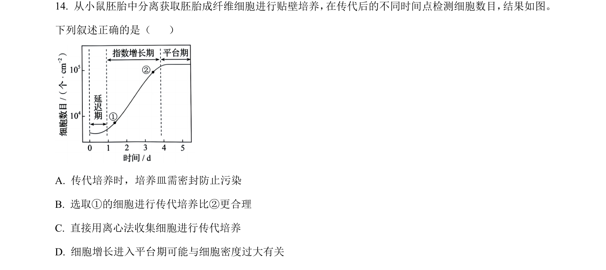
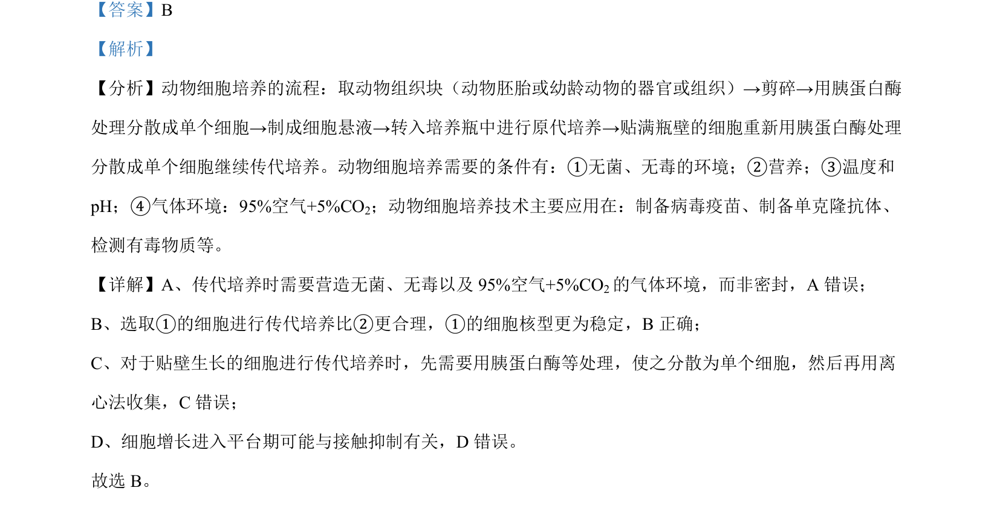

考点：动物细胞培养 传代培养 接触抑制

该题考查动物细胞传代培养的条件和细胞增长特点。

📄 原 PDF 第 10 页：
素材/真题/吉林/2008-2024·（吉林）生物高考真题/2024年高考生物试卷（辽宁）（解析卷）.pdf
【答案】B 【解析】 【分析】动物细胞培养的流程：取动物组织块（动物胚胎或幼龄动物的器官或组织）→剪碎→用胰蛋白酶 处理分散成单个细胞→制成细胞悬液→转入培养瓶中进行原代培养→贴满瓶壁的细胞重新用胰蛋白酶处理 分散成单个细胞继续传代培养。动物细胞培养需要的条件有：①无菌、无毒的环境；②营养；③温度和 pH；④气体环境：95%空气+5%CO2；动物细胞培养技术主要应用在：制备病毒疫苗、制备单克隆抗体、 检测有毒物质等。 【详解】A、传代培养时需要营造无菌、无毒以及 95%空气+5%CO2的气体环境，而非密封，A 错误； B、选取①的细胞进行传代培养比②更合理，①的细胞核型更为稳定，B正确； C、对于贴壁生长的细胞进行传代培养时，先需要用胰蛋白酶等处理，使之分散为单个细胞，然后再用离 心法收集，C错误； D、细胞增长进入平台期可能与接触抑制有关，D 错误。 故选 B。